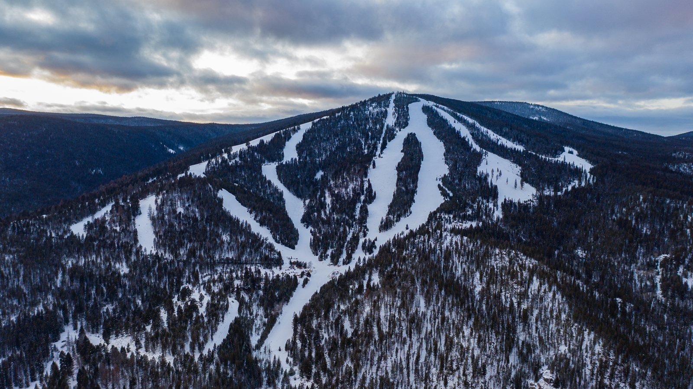

About Maverick Mountain
We’re not saying Maverick Mountain has special powers, but a lot of magical things do happen here. The slopes here at Maverick enjoy a nearly lift line–free existence all winter long, not to mention a nearly cloud-free one. To those who wish to experience the best of Montana winters, we are excited to show you what we’ve got! Tucked away in the beautiful Grasshopper Valley just 50 miles west of Dillon Montana, Maverick Mountain is a slice of Montana paradise. We are a Montana local secret, and that means if you’re looking for untouched powder, you’ll be more likely to find it here than anywhere else! After your mountain fun, swing by the lodge for a hot chocolate or a cold beer and some food. Don’t want the fun to end? Check out our local resort, Elkhorn Hot Springs, where you can find lodging, homestyle dining and of course HOT SPRINGS! Just a few short minutes from the mountain. We look forward to seeing you at the resort this season!
Why Maverick?
Maverick Mountain is nestled back 50 miles west of Dillion Montana, and consistently gets heavy snow. Maverick is also only 2 miles away from Elkhorn Hot Springs. Elkhorn has lodging avalible with over a dozen cabins to rent out. The hot springs are filled with warm spring water and provides great relaxation after a long ski day.
Learn More About Maverick